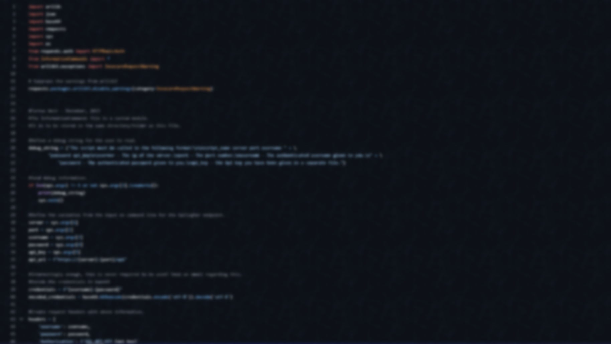
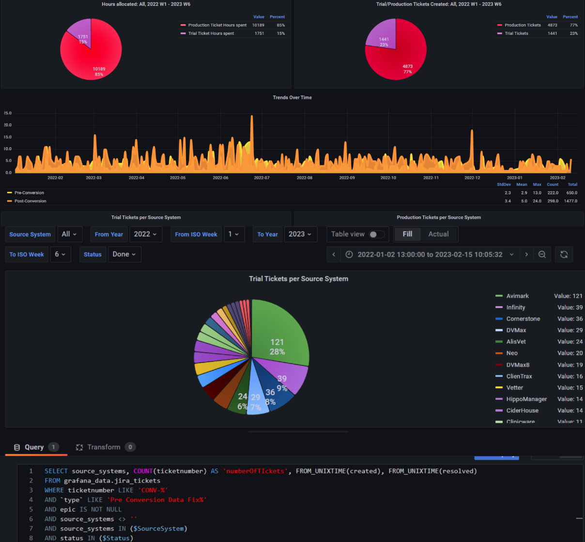
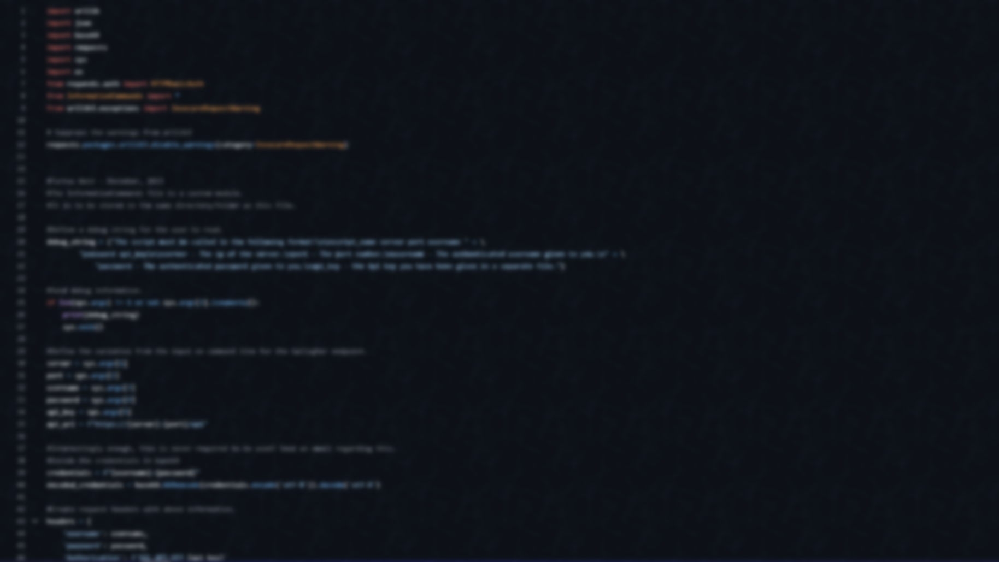
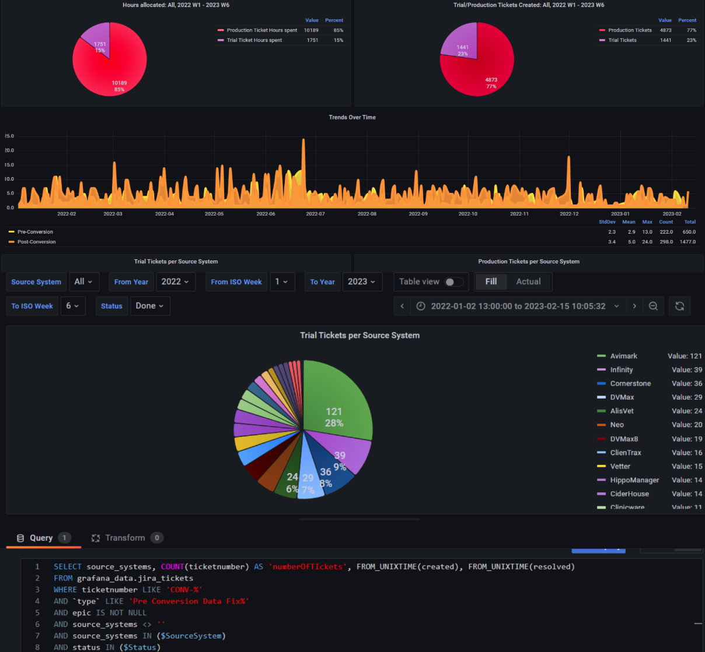

Computer Scientist
The Portfolio of Tarras Weir

 



PySpark - Shopping statistics
This project was a test of my data analysis and transformation skills using Spark, RDDs, and other related big data
methods.
The goal was to sift through data based on criteria, ensure the performance was optimal, values were
accurate, and ensure a valuable conclusion.
This was all run on Google Cloud clusters.
Unity Gamedev & Wave Shaders
This project is programmed entirely with a mix of C# and Unity's HLSL.
The shader goal was simple: imitate water my modifying a mesh using vertex shaders.
The game utilises methods such as OOP, perlin noise for terrain generation, and hierarchical state machines.
REST Data Extraction
In this project, I used tools such as the REST API, Python scripting & PowerBI.
This was a solo project for a company. The goal of this project was to analyse the issues and incidents around different sites via connection to an external client, and present the data into a readable format for analytical purposes - this was so the manager could better allocate his resources.
The project code is available via my Github.
Grafana Board
This project was commissioned by the project manager. They requested insights into our ticket numbers and the source systems with the most problems.
I worked alongside a tutor and another colleague to get the SQL logic created and the dashboard out the door.

Career information:
About
Skills
Experience
Education
Country:
New ZealandInterests:
Cloud Development, Game Development, Software Development, Data Engineering & AnalyticsPersonal Goals:
- Gain more industry experience.
- Practice Javascript more to experiment with Frontend.
- Get experience with Terraform and IaC.
Game Development:
Creating applications using C# and Unity.Data Engineering:
Data extraction, ETL, automation, and Python scripting.Development:
Creating bots, data projects, websites, and more.Languages:
Javascript, Python, HTML, CSS, mySQL, Java, C#, C
2022 - 2023:
Data Engineering intern @ ezyVet.2023:
Data Analyst @ Te Whatu Ora.2024 - Current:
IT Service Desk Engineer @ NZAA.
Formal:
Bachelor's of Computer Science at University of Canterbury. (NZQA Level 7)Personal:
- RDD and Dataframe Pandas self-study.
- Shader development in Unity.
- AWS Cloud self-study.Certifications:
- Comprehesive First Aid (2024)
- ITIL Foundations 4 (2024)
- AWS Certified Cloud Practitioner (2025)